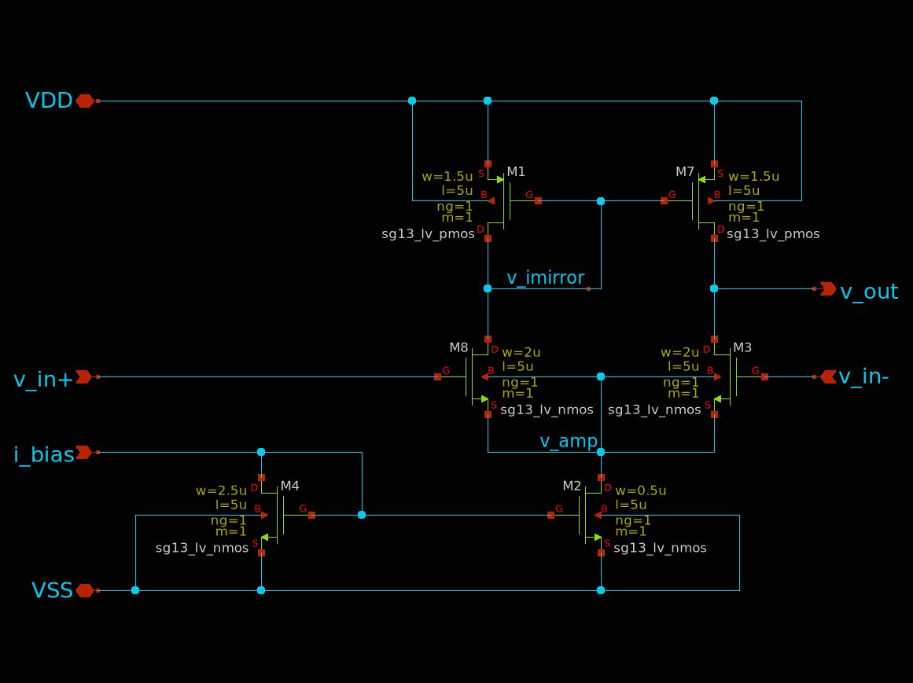

# Technology and model parameters
VDD = 1.8 # Supply voltage [V]
VTHN = 0.4 # NMOS threshold voltage [V]
VTHP = -0.4 # PMOS threshold voltage [V]
mu_n_Cox = 200e-6 # NMOS process transconductance parameter [A/V^2]
mu_p_Cox = 100e-6 # PMOS process transconductance parameter [A/V^2]
lambda_n = 0.1 # Channel length modulation NMOS [1/V]
lambda_p = 0.1 # Channel length modulation PMOS [1/V]Xschem Simulation
Environment Setup
Proper configuration of the simulation environment is crucial for accurate and reliable simulation results using Xschem within a Docker container. This section details the necessary considerations regarding path handling and Docker environment variables for a robust simulation process.
Absolute vs. Relative Path Handling
In integrated circuit simulations, particularly involving hierarchical netlisting used by Xschem, careful management of file paths is essential. Absolute paths were chosen to ensure consistency and reliability, as hierarchical structures in netlisting frequently generate new subdirectories during simulation processes. Using absolute paths prevents issues arising from relative paths becoming invalid when directory structures change. Relative paths, although theoretically functional, add complexity and increase the likelihood of path errors during simulations.
Therefore, all simulation paths have been consistently defined using absolute references, guaranteeing stable and predictable netlisting and simulation behavior throughout the project.
Docker Environment Variables Configuration
Within the Docker container environment used for simulations, specific variables require explicit and careful configuration. Key points regarding Docker environment setup include:
DESIGNS Variable:
The core Docker environment variable,$DESIGNS, is configured to reference the directoryroot/FOSS/designs. Local project paths and symbols are added explicitly to this variable to ensure accurate referencing and inclusion during netlisting.Docker Root Directory:
The root directory within the Docker environment differs from that of the host operating system, specifically being located atroot/headless. This distinction requires careful handling when navigating or setting paths within Docker terminals.Terminal and Directory Awareness:
Users, especially those working on Windows-based systems, need to distinguish clearly between terminal environments (native Windows, Windows Subsystem for Linux, Docker) as each has fundamentally different root directories and file path conventions. Maintaining clear and explicit awareness of these distinctions prevents file referencing errors during simulations.
These explicit configurations and considerations ensure that the Xschem simulation environment operates smoothly, predictably, and accurately throughout the project’s lifecycle. ## Symbol and Netlist Preparation
Accurate preparation of symbols and netlists is fundamental for reliable integrated circuit simulations using Xschem. This section outlines the critical aspects regarding symbol definitions, classifications, netlist generation, and debugging practices to ensure proper functionality and error-free simulations.
Symbol Definitions and Classification (Analog Pins)
All symbols used within this simulation framework must be explicitly classified as analog components. Digital pins or incorrectly labeled pins lead to simulation failures because they are incompatible with the analog circuit simulation environment. Furthermore, each symbol must be explicitly marked as a sub-circuit rather than a primitive component. Mislabeling symbols as primitives can cause errors during hierarchical netlist processing, as the netlister expects defined sub-circuit symbols to correctly navigate the circuit hierarchy.
In this project, all symbols were thoroughly reviewed to confirm they were analog and properly labeled as sub-circuits.
Netlist Generation and Validation
Netlist generation in Xschem follows a hierarchical methodology. Starting from the top schematic, the netlister recursively searches for defined symbols globally. It is essential that symbol paths and local variables are correctly configured and matched explicitly in each hierarchy level. If paths or symbols are misconfigured or missing, the netlister fails to locate necessary components, leading to simulation errors.
Therefore, explicit steps were taken to ensure:
- Proper global variable definitions for symbol paths.
- Accurate symbol descriptions that match netlist entries.
- Verification of netlists after every significant schematic modification.
Debugging Using Text Editor
Effective debugging practices strongly emphasize using plain-text editors to inspect and modify symbol (.sym) and schematic (.scm) files. These files are stored in a human-readable ASCII format, making direct text inspection both possible and advisable. Graphical user interfaces, although useful, often obscure underlying errors or misconfigurations.
To identify and resolve issues quickly and accurately, direct file editing and inspection methods were consistently applied. Regular expressions and Unix text manipulation tools were also employed to systematically correct and update path information and ensure consistency throughout the project’s schematic files.
Adopting this debugging approach significantly enhanced the efficiency and accuracy of symbol and netlist preparation processes throughout the simulation.
OTA Circuit Integration
Initially, our group developed our own five-transistor OTA schematic within Xschem to gain practical insights and explore various design parameters. After conducting detailed simulations and analyses, and discussing our results with the professor, we concluded that the five-transistor OTA provided by Prof. Prettel offered superior performance and reliability for our application. Thus, the decision was made to proceed with Prof. Prettel’s well-established OTA design.
Own OTA design

OTA Description (Five-Transistor OTA by Prof. Prettel)
OTA Gain Target and Calculation
OTA Current Demand Calculation
Circuit Parameter Choices
Capacitor Selection (Unit Capacitor: 100 nF)
Resistor Determination (~1.6 kΩ)
Simulation Procedure
Transient Simulation
OTA Standalone Characterization
OTA with Realistic Load Conditions
AC Simulation (Linear Behavior Verification)
GM/ID Methodology
One of the first questions we have to ask in IC design is how small or how large we can design the MOSFETs we’re using in the circuits. MOSFETs can be used in saturation mode or in the triode state (as well as in cut-off but this is not relevant for us). When the FET is in saturation the drain current \(I_{D}\) is controlled primarily by the gate-source voltage \(V_{GS}\). In this case the drain-source voltage has a smaller impact on the drain current. For the Transistor to work in saturation the drain-source terminals need to be driven with a voltage high enough so this “saturates” the FET and the highest drain-current is achieved.
On the other hand if the voltage applied across the drain-source contacts (on a NMOS for example) is relatively low (compared to the voltage for saturation), the FET will operate in the so called triode mode. In triode mode the drain-source voltage \(V_{DS}\) has a fundamentally larger impact on the drain current then in the saturation mode. [@hpretlacd]
One Methodology to solve the question we asked at the beginning of this chapter is the \(\frac{gm}{I_{D}}\) methodology which we will introduce in a moment. There are basically three MOSFET characteristics directly describing the behaviour of it:
- \(\frac{g_m}{I_D}\) : Transconductance Efficiency
- \(\frac{\omega_{T}}{f_T}\) : Transit frequency
- \(\frac{g_m}{g_{ds}}\) : Intrinsic Gain
To understand the first characteristic for our FETs we have to take a look at the different operating points which depend on the applied voltages. Whenever we apply voltages to a FET in order to control a specific drain current \(I_{D}\), we can operate the FET in either weak inversion, strong inversion or moderate inversion. This behaviour is controlled by the Overdrive Voltage \(V_{OV}\) which is defined as the difference between the gate-source voltage and the threshold voltage. To note this small point the drain-current is controlled by the voltage between gate and source. Whenever an nmos is not being used as a low-side switch or amplifier or the pmos is being used as a low-side component problems can arise. Since we are using FETs in our switched capacitor integrator for example this is quite important.
\[ V_{OV} = V_{GS} - V_{TH} \tag{27} \]
We have to keep in mind that the threshold voltage isn’t a magical number that can be applied to every MOSFET, it rather depends on the geometry (with W and L for example) and other factors. For the example nmos given in the Analog Circuit Design IHP SG13G2 Devices Table by Professor Pretl, the threshold voltage is 0.5V. Therefore the overdrive voltage describes how “much” the gate-source voltage is above the threshold of the FET. Depending on this overdrive voltage the circuit/ic designer can apply different \(\frac{g_{M}}{I_{D}}\) values with the unit [\(\frac{1}{V}\)]. This unit is derived in the following way:
With \(g_{M}\) defined by:
\[ g_{M} = \frac{\partial I_D}{\partial V_{GS}} \tag{28} \]
and \(I_{D}\) having the unit Ampere [A] and the voltage \(V_{GS}\) we get:
\[ \frac{\frac{A}{V}}{A} = \frac{1}{V} \tag{29} \]
Before we continue with the \(\frac{g_{M}}{I_{D}}\) method we want to note that there also is the square-law model with which circuit designers can design MOSFET circuits. This model is usually applicable for PCB circuits and takes the situation into account where the MOSFET is driven in the stong inversion state. The square-law model is being applied assuming that the FET is operating in the “linear” or “triode” mode, however on nanometer scale FETs (down to 130 nm with the IHP-SG13G2 PDK) this model doesn’t give us precise solutions anymore. Many effects like parasitic capacitances alter the operational behaviour of the FET and lead to the square-law model deviating afar from the real-world behaviour in many situations [@SQRLaw].
The square-model drain-current behavior is being described by the following formula:
\[ I_{D} = \frac{Z \cdot \overline{\mu_n} \cdot C_{OX}}{L} [(V_{GS} - V_{T}) \cdot V_{DS} - \frac{V_{DS}^2}{2}] \tag{30} \]
with the two conditions:
\(0 \leq V_{DS} \leq V_{D_{SAT}}\) and \(V_{GS} \geq V_T\)
with following definitions:
- \(C_{OX} = \frac{\epsilon_{ox}}{x_{ox}}\)
- Z = MOSFET width
- L = MOSFET Channel length
- \(V_T\) = Threshold voltage
- \(\overline{\mu_n}\) = effective electron mobility
The threshold voltage is defined as:
\[ V_T = 2 \phi_F + \frac{\epsilon_s}{C_{OX}} \sqrt{\frac{2q N_{A}}{\epsilon} (2\phi_F)} \tag{31} \]
with:
\(\phi_F\) being the Fermi Potential (surface potential) defined by:
\[ \phi_F = \frac{kT}{q} \cdot ln (\frac{N_A}{n_i}) \tag{32} \]
with \(N_A\) being the acceptor doping concentration and \(n_i\) being the intrinsic carrier concentration. The term 2 \(\phi_F\) corresponds to the surface potential required to achieve strong inversion.
For more details the reader can consult [@SQRLaw],[@MurmannGmId] or [@gmId].
To illustrate the problems of the square-law model when designing MOSFET circuits at nanometer scale we will look at some graphs visualizing it’s limitation. First of all let’s look at the formulas for the square-law when we want to achieve more performance with our FETs:
Transconductance Efficiency: \[ \frac{g_m}{I_D} \cong \frac{2}{V_{OV}} \tag{33} \]
higher efficiencs here means more transconductance for the same drain current.
Transit Frequency:
\[ \frac{g_M}{C_{gg}} \cong \frac{3}{2}\frac{\mu V_{OV}}{L^2} \tag{34} \]
higher transit frequency for the same gate-capacitance.
Intrinsic Gain:
\[ \frac{g_m}{g_{ds}} \cong \frac{2}{\lambda V_{OV}} \tag{35} \]
high transconductance (at same drain-current \(I_D\)) without higher output conductance.
The square-law model completely fails in these cases when the MOSFET is not operation in strong inversion. In moderate and weak inversion we are forced to use a different mathmatical model , and the \(\frac{g_M}{I_D}\) method is a really good starting point [@RWalker].
The following figures will show the deviation between square-law and measurements as well as the \(\frac{g_M}{I_D}\) methodology:
So first of all when we use \(g_M\) and \(I_D\) we specify that for a specific drain-current we get a specific transconductance, for example with a \(\frac{g_M}{I_D}\) of 10 S/A we get 10 \(\mu\) S per 1 \(\mu\) A of bias current. And depending on how “much” the transistor is operating above it’s threshold voltage \(V_{th}\) (basically the Overdrive Voltage \(V_{OV}\) ) you get different inversion levels. From weak inveresions for low overdrive voltages to moderate inversion when operating at approximately \(V_{OV}\) = \(V_{th}\) to high inversion when \(V_{OV}\) > \(V_{th}\).
With the square-law value for transconductance efficiency we completely deviate with that approximation in weak and moderate inversion:

Another deviation from square-law to real MOSFET behaviour can be seen when we increase the gate-source voltage of the FET and measure the drain-current. According to square-law formual for the drain-current the current should just increase to the square with increasing gate-source voltage. But by taking the square of the drain-current and increasing \(V_{GS}\) we can see that the drain-current does not magically start flowing above the threshold-voltage and also the behaviour is also not linear (quadratically when not taking the square of the current):

This simulation is done for a n-channel MOSFET with a drain-source voltage of 1.8 V and a size of L = 180 nm and W = 5 \(\mu\)m.
The drain-current behaviour at sub-threshold gate voltages is completely inaccurate for the square-law too, and the following graph visualizes the limitation of the square-law at this point again:

These three examples show that the approach using square-law to size MOSFETs is not sufficient when the transistor is operating in weak or moderate inversion and when driving the FET (nmos for example) with a low gate-source (or overdrive-) voltage. To cite Mr. Walker on this topic: “This means that the square law equation (which assumes 100% drift current) does not work unless the gate overdrive is several \(\frac{kT}{q}\), [@RWalker]”.
To conclude this, we can keep in mind that there is no simple formula that can describe the drain-current behaviour in all situations and be universally used. So using the \(\frac{g_m}{I_D}\) methodology is the way to go in our project.
Now with that out of the way we can design our circuits using the \(\frac{g_m}{I_D}\) methodology. The main properties of our MOSFETs we can manipulate in xschem are the lenght of the channel L, the width W and the bias current \(I_D\). The common way to use this method is to first characterize nmos and pmos field effect transistors and then use this data to design the circuits. In the chapter “MOSFET characterization Testbench” chapter in [@hpretlacd] we can see how the values for the \(\frac{g_m}{I_D}\) methodology are being simulated for later use.
The lenght of the MOSFET channel also has a large influence on it’s frequency characteristic as it can be seen in this simulation:

The operating areas of interest for us are the saturation region (when using the FET as an amplifier for example) and the region when the FET is being used to “just” work as a switch. With setting \(V_{DS}\) to \(\frac{V_{DD}}{2}\) we keep the FET in saturation. Reminding ourselves again that with larger \(g_M\) we have more “gain” and with a smaller \(I_D\) we have higher efficiency we try to hit the sweetspot between size (as every square milimeter has it’s cost) and current consumption (if we have wearable battery powered devices for example). Keeping also in mind that temperature has a large effect we cannot use arbitratily large drain currents.
Following plot visualizes the dependancy of \(\frac{g_M}{I_D}\) to the gate-source voltage and shows the transit frequency behaviour too:

GM/ID Overview
Device sizing is a fundamental step in analog circuit design. Specifically, for Operational Transconductance Amplifiers (OTAs), proper sizing ensures the desired trade-off between gain, bandwidth, power consumption, and linearity. A structured approach to sizing guarantees that the transistors operate in their optimal region—typically strong inversion and saturation for analog applications.
This section presents a basic OTA sizing methodology based on the work of Prepl, whose notebook is publicly available at GitHub: analog-circuit-design.
The notebook demonstrates a Python-based framework for calculating initial transistor dimensions in a basic OTA. Below is an explanation of the key steps, equations, and important code snippets from the sizing method, along with visual aids to clarify the process.
The sizing workflow follows these general steps:
- Define technology and process parameters.
- Specify bias currents and overdrive voltages.
- Calculate width-to-length ratios (W/L) for each transistor.
- Determine transconductance, output resistance, and gain.
- Evaluate key performance metrics like slew rate and gain-bandwidth product.
At the beginning of the notebook, fundamental technology parameters are defined, including supply voltages, threshold voltages, mobility, and channel-length modulation factors for NMOS and PMOS transistors.
These parameters are critical for calculating transistor drain current in saturation:
\[ I_D = \frac{1}{2} \mu C_{ox} \frac{W}{L} (V_{GS} - V_{TH})^2 \tag{24} \]
The differential pair (M1 and M2) defines the input transconductance of the OTA. Sizing begins by selecting bias current and overdrive voltage (V\(_{OV}\)):
# Bias current for each NMOS transistor
ID1 = 100e-6 # [A]
# Overdrive voltage for M1 and M2
VOV1 = 0.2 # [V]
# Calculate W/L ratio for M1 and M2
WL1 = 2 * ID1 / (mu_n_Cox * VOV1**2)
print(f"W/L for M1 and M2: {WL1:.2f}")W/L for M1 and M2: 25.00In this example: - Bias current (ID1) is 100 µA per transistor. - Overdrive voltage (VOV1) is 0.2 V. - Calculated W/L ensures M1 and M2 operate in saturation with desired transconductance.
The tail current source (M5) provides total bias current to the differential pair:
# Tail current source sizing (M5)
ID5 = 200e-6 # Total bias current [A]
VOV5 = 0.2 # Overdrive voltage [V]
WL5 = 2 * ID5 / (mu_n_Cox * VOV5**2)
print(f"W/L for M5: {WL5:.2f}")W/L for M5: 50.00M5 carries the combined current of M1 and M2, typically twice ID1.
PMOS current mirrors (M3 and M4) act as active loads for the differential pair, impacting gain and output resistance:
# Load transistors sizing (M3 and M4)
ID3 = 100e-6 # [A]
VOV3 = 0.2 # [V]
WL3 = 2 * ID3 / (mu_p_Cox * VOV3**2)
print(f"W/L for M3 and M4: {WL3:.2f}")W/L for M3 and M4: 50.00Lowering overdrive voltage (V\(_{OV3}\)) increases output resistance, improving OTA voltage gain.
Once W/L ratios are calculated, device transconductance (g\(_m\)) and output resistance (r\(_o\)) are derived:
gm1 = mu_n_Cox * WL1 * VOV1 / 2
ro1 = 1 / (lambda_n * ID1)
ro3 = 1 / (lambda_p * ID3)
print(f"gm1: {gm1:.2e} S")
print(f"ro1: {ro1:.2e} Ω")
print(f"ro3: {ro3:.2e} Ω")gm1: 5.00e-04 S
ro1: 1.00e+05 Ω
ro3: 1.00e+05 ΩThe OTA’s DC gain is:
\[ A_v = g_{m1} \cdot (r_{o1} \parallel r_{o3}) \tag{25} \]
In Python:
Av = gm1 * (ro1 * ro3) / (ro1 + ro3)
print(f"Voltage gain A_v: {Av:.2f}")Voltage gain A_v: 25.00Evaluating Performance Metrics - Slew Rate and GBW:
Slew rate and gain-bandwidth product (GBW) predict OTA dynamic performance:
import numpy as np
CL = 1e-12 # Load capacitance [F]
# Slew rate calculation
SR = ID5 / CL
print(f"Slew Rate: {SR:.2e} V/s")
# Gain Bandwidth Product (GBW)
GBW = gm1 / (2 * np.pi * CL)
print(f"Gain Bandwidth Product: {GBW:.2e} Hz")Slew Rate: 2.00e+08 V/s
Gain Bandwidth Product: 7.96e+07 Hz- Slew Rate (SR): OTA’s ability to respond to large signals.
- Gain Bandwidth Product (GBW): Small-signal frequency response.
The presented methodology offers a systematic, reproducible approach to OTA design. Starting with hand calculations and validating through simulation helps designers optimize OTA performance while balancing speed, power, and gain. This lays groundwork for addressing noise, mismatch, and layout parasitics. Further information is publicly available at GitHub: analog-circuit-design.